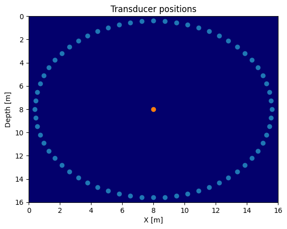
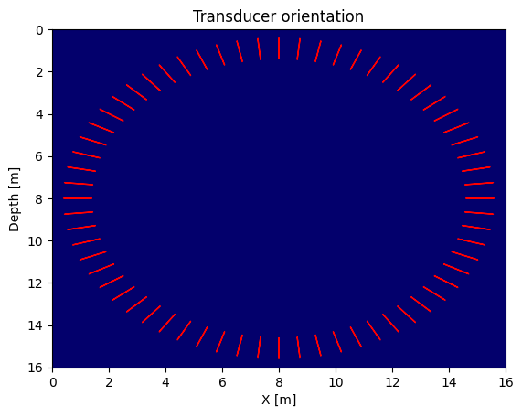
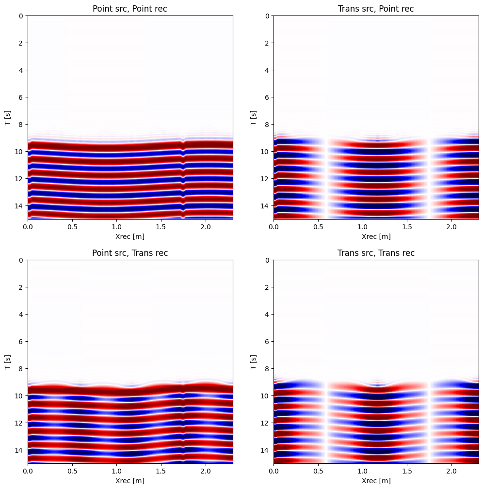
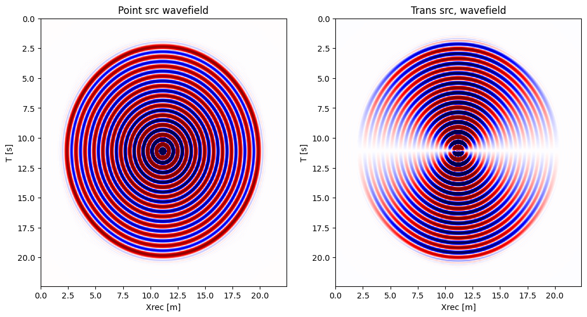
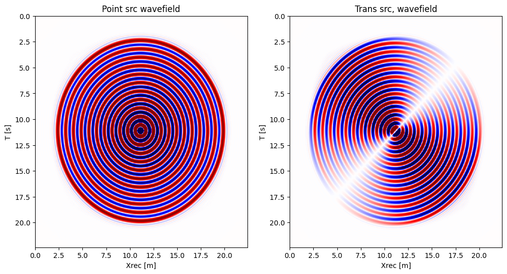
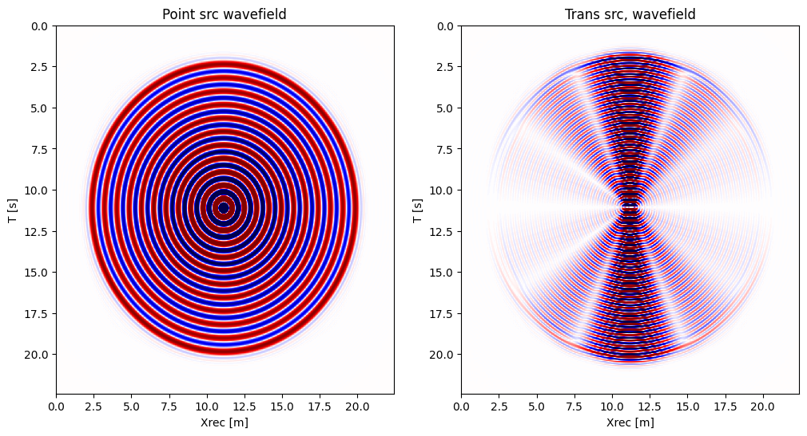

Transducers in PhotoAcoustic.jl
One of the main compoenent of real world photoacoustic imaging and inversion, and more generally medical wave-equation based inversion (ultrasound, ...) is the necessity to model transducers properly.
Therefore, in Photoacoustic, we offer a simpler but effective implementation of a transducer as a plane (line in 2D) dipole. In the following we illustrate the usage of transducer and highligh the impace on the wavefield
using PhotoAcoustic, SlimPlotting, PyPlot, JUDIModel
For illustration purpose, we consider a simpel constant velocity model
n, d, o = (201, 201), (0.08, 0.08), (0., 0.)
model = Model(n, d, o, 1.5f0 * ones(Float32, 201, 201))Model (n=(201, 201), d=(0.08f0, 0.08f0), o=(0.0f0, 0.0f0)) with parameters [:m]Geometry
Let's now define our acquisition geometry as a circle and visualize it on top of the model.
# Set up receiver geometry
ntransducers = 64
domain_x = (n[1] - 1)*d[1]
domain_z = (n[2] - 1)*d[2]
rad = .95*domain_x / 2
xrec, zrec, theta = circle_geom(domain_x / 2, domain_z / 2, rad, ntransducers)
yrec = 0f0 # 2d so always 0
xsrc, ysrc, zsrc = [Float32(domain_x * .5f0)], [0f0], [Float32(domain_z * .5f0)](Float32[8.0], Float32[0.0], Float32[8.0])scatter(xrec, zrec)
scatter(xsrc, zsrc)
plot_velocity(model.m; new_fig=false, name="Transducer positions")
plot_velocity(model.m; new_fig=false, name="Transducer orientation")
for t=1:ntransducers
# y pointing down convention so need the minus sign
dx, dy = -1 .* sincos(theta[t] - pi/2)
arrow(x=xrec[t], y=zrec[t], dx=dx, dy=dy, color="r")
end
Propagators
With our geometry define, we can create our propagators and comapre the data with what a point receiver would record. Because we. designed PhotoAcoustic to be an extension of JUDI, we can for this tutorial ignore the initial state propagation and focus on point source propagation for illustration purposes.
dt = 0.01f0 # microseconds
time_rec = 15f0 # microseconds
f0 = .01f0/dt # 100 MHz
recGeometry = Geometry(xrec, yrec, zrec; dt=dt, t=time_rec, nsrc=1)GeometryIC{Float32} wiht 1 sourcesAinv = judiModeling(model; options=Options(space_order=16))JUDI forward{Float32} propagator (x * z * time) -> (x * z * time)Pr = judiProjection(recGeometry)
Prtrans = judiTransducerProjection(recGeometry, d[1], .25f0, [theta])┌ Warning: Only one angle provided, assuming 2D model
└ @ PhotoAcoustic /Users/mathiaslouboutin/.julia/dev/PhotoAcoustic/src/transducer.jl:71
judiProjection{Float32}(AbstractSize(Dict{Symbol, Any}(:src => 1, :rec => [64], :time => Integer[1501])), AbstractSize(Dict{Symbol, Any}(:x => 0, :src => 1, :y => 0, :z => 0, :time => Integer[1501])), PhotoAcoustic.TransducerGeometry{Float32, 0.08f0} wiht 1 sources)function sinfun(f0, dt, time_rec)
time = Float32.(0f0:dt:time_rec)
return reshape(Float32.(sin.(2 * time .* pi * f0)), : ,1)
endsinfun (generic function with 1 method)# Simple point source
srcGeom = Geometry(xsrc, ysrc, zsrc; dt=dt, t=time_rec)
Ps = judiProjection(srcGeom)
Pstrans = judiTransducerProjection(srcGeom, d[1], [[.25f0]], [[0f0]]) # Transducer as source
q = judiVector(srcGeom, sinfun(f0, dt, time_rec))┌ Warning: Only one angle provided, assuming 2D model
└ @ PhotoAcoustic /Users/mathiaslouboutin/.julia/dev/PhotoAcoustic/src/transducer.jl:71
judiVector{Float32, Matrix{Float32}} with 1 sourcesPropagation
We can now propagate and look at our difference fields. We can clearly see differences in directivity.
d_pp = Pr * Ainv * Ps' *qBuilding forward operator
Operator `forward` ran in 0.04 s
judiVector{Float32, Matrix{Float32}} with 1 sourcesd_pt = Pr * Ainv * Pstrans' *qOperator `forward` ran in 0.04 s
judiVector{Float32, Matrix{Float32}} with 1 sourcesd_tp = Prtrans * Ainv * Ps' *qOperator `forward` ran in 0.05 s
judiVector{Float32, Matrix{Float32}} with 1 sourcesd_tt = Prtrans * Ainv * Pstrans' *qOperator `forward` ran in 0.05 s
judiVector{Float32, Matrix{Float32}} with 1 sourcesfigure(figsize=(12, 12))
subplot(221)
plot_sdata(d_pp; cmap="seismic", name="Point src, Point rec", new_fig=false)
subplot(222)
plot_sdata(d_pt; cmap="seismic", name="Trans src, Point rec", new_fig=false)
subplot(223)
plot_sdata(d_tp; cmap="seismic", name="Point src, Trans rec", new_fig=false)
subplot(224)
plot_sdata(d_tt; cmap="seismic", name="Trans src, Trans rec", new_fig=false)
Since we are fully comaptible with standard JUDI propagation, we can also directly look at the wavefield for a better understanding
u_p = Ainv * Ps' * qBuilding forward operator
Operator `forward` ran in 0.04 s
judiWavefield{Float32} with 1 sourcesu_t = Ainv * Pstrans' *qOperator `forward` ran in 0.04 s
judiWavefield{Float32} with 1 sourcesfigure(figsize=(12, 6))
subplot(121)
plot_sdata(u_p.data[1][300, :, :], d; cmap="seismic", name="Point src wavefield", new_fig=false)
subplot(122)
plot_sdata(u_t.data[1][300, :, :], d; cmap="seismic", name="Trans src, wavefield", new_fig=false)
Let's change the orientation of the source and see the difference
Pstrans.geometry.θ[1][1] = Float32(pi/4)0.7853982f0u_t = Ainv * Pstrans' *qOperator `forward` ran in 0.04 s
judiWavefield{Float32} with 1 sourcesfigure(figsize=(12, 6))
subplot(121)
plot_sdata(u_p.data[1][300, :, :], d; cmap="seismic", name="Point src wavefield", new_fig=false)
subplot(122)
plot_sdata(u_t.data[1][300, :, :], d; cmap="seismic", name="Trans src, wavefield", new_fig=false)
Now let's change the radius and the frequency of the transducer to highligh the directionality
Pstrans.geometry.θ[1][1] = 0f0
Pstrans.geometry.r[1][1] = Float32(5 * d[1])0.4f0time = reshape(0f0:dt:time_rec, 1501 ,1)
f0 = 2.5f0
q2 = judiVector(deepcopy(srcGeom), sinfun(f0, dt, time_rec))judiVector{Float32, Matrix{Float32}} with 1 sourcesu_t = Ainv * Pstrans' * q2Operator `forward` ran in 0.04 s
judiWavefield{Float32} with 1 sourcesfigure(figsize=(12, 6))
subplot(121)
plot_sdata(u_p.data[1][300, :, :], d; cmap="seismic", name="Point src wavefield", new_fig=false)
subplot(122)
plot_sdata(u_t.data[1][300, :, :], d; cmap="seismic", name="Trans src, wavefield", new_fig=false)